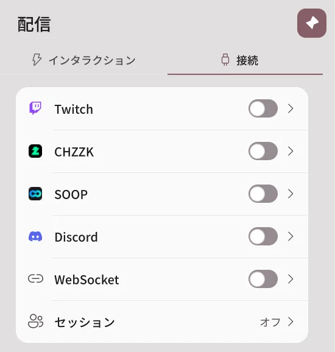
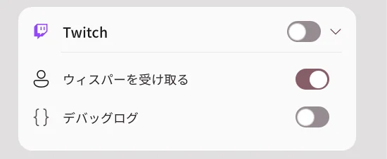
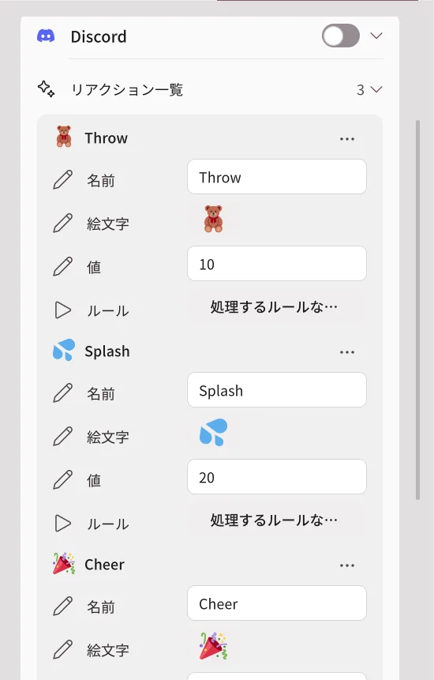
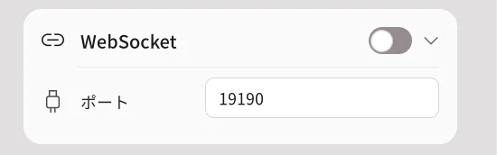

配信連携
2.2.0 で追加された機能です。2.1.2 以前にはありません。
Twitch・CHZZK・SOOPの視聴者イベントや、Discordの友達のリアクションを受け取って、アバターが反応するようにします。配信連携はPro機能で、現在はベータです。実際の配信で問題が起きたら、エラーレポートでお知らせください。
配信ページには2つのタブがあります。
| タブ | できること |
|---|---|
| インタラクション | イベントが届いたときに何をするかを決めます。かんたん設定、ノードエディター、倒れる・寄付表示・テストがあります。 |
| 接続 | プラットフォームのアカウントとDiscordのチャンネルを接続し、WebSocketとリモート合同配信のセッションを開きます。 |

Twitch・CHZZK・SOOPの接続
- 配信 → 接続を開きます。
- 接続するプラットフォームのスイッチをオンにします。
- ブラウザーに開いたプラットフォームのログイン画面で、自分の配信アカウントにログインし、権限を許可します。
- カードに接続済みと表示されれば、イベントを受け取る準備は完了です。

| プラットフォーム | 受け取れるイベント |
|---|---|
| Twitch | チャンネルポイント使用、チャット、フォロー、サブスク（ギフト・サブスクメッセージを含む）、ビッツ、レイド、ハイプトレイン、ウィスパー |
| CHZZK | チャット、ドネーション（チャット・動画）、サブスク |
| SOOP | チャット、スターバルーン、アドバルーン、動画バルーン、ステッカー、サブスク、ギフト |
スイッチをオフにすると、それ以上イベントを受け取りません。保存されたログインとルールは削除されません。デバッグログをオンにすると、受け取ったイベントが診断ログに詳しく残ります。
Twitch・CHZZK・SOOPのログインで行うトークンの交換は、開発者のサーバー（
stream-auth.erp.pictures）を経由します。プラットフォームの秘密鍵はこのサーバーにだけあり、受け取ったログイン情報はこのPCに保存されます。
Discordの接続
配信を見ていない友達も、Discordのチャンネルでボタンや/リアクションコマンドを使ってアバターを動かせます。Avatar Liveのアプリが起動しているときだけ動作します。

1. Discordアプリを追加する
Avatar Live Discordアプリを追加するを開き、追加先を選びます。アプリが求めるのはコマンド（applications.commands）の権限だけです。メッセージを読んだり、サーバーを管理したりはしません。
| 追加先 | 使う場合 |
|---|---|
| サーバーに追加 | 自分のDiscordサーバーのチャンネルで使います。サーバーの管理権限が必要です。友達は何もインストールしません。 |
| 自分のアカウントに追加 | サーバーがない場合や、グループDMで使います。グループDMでコマンドを直接入力するには、その友達もアプリを自分のアカウントに追加する必要があります。インストールしていない友達は、自分が投稿したボタンを押します。 |
2. チャンネルを接続する
- アプリで配信 → 接続 → Discordのスイッチをオンにします。
- 接続コードを作るを押します。8桁のコードが10分間表示されます。
- 接続するDiscordのチャンネルで
/接続コマンドを選び、コード欄にそのコードを入力して送信します。 - アプリに「接続しますか？」というウィンドウが表示されたら、サーバーとチャンネルの名前を確認して接続を押します。
- 接続済みチャンネルの一覧に、そのチャンネルが表示されます。
コードは1回だけ使えます。他の人がすでに接続したチャンネルは接続できません。
3. リアクションボタンを投稿する
- 接続したチャンネルで
/パネルを送信します。リアクション一覧のリアクションがボタンとして投稿されます。 - 友達がボタンを押すか、
/リアクションでリアクションを選ぶと、そのリアクションを処理するルールが実行されます。 - Discordのメッセージに、誰が何をしたかが表示されます。
リアクション一覧では、ボタンごとに名前・絵文字・値・ルールを決めます。値は、ルールの最小・最大個数の条件が見る数です。ルールを押すとルールが順に切り替わり、選んだルールのDiscordリアクショントリガーがオンになります。
Discordのコマンド
| コマンド | 誰が | できること |
|---|---|---|
/接続 コード: |
自分 | このチャンネルを自分のAvatar Liveに接続します。 |
/接続解除 |
自分・サーバー管理者 | このチャンネルの接続を解除します。 |
/パネル |
自分・サーバー管理者 | リアクションボタンを投稿します。グループDMでも使えます。 |
/リアクション |
友達 | リアクションを1つ選びます。選ばなければ最初のリアクションです。 |
/ポイント /出席 /ギフト /ランキング |
友達 | ポイントゲームのポイントを確認し、貯め、分け合います。 |
/ルーレット /スロット /ハイアンドロー /ブラックジャック /対決 /予想 /宝くじ /レース /クイズ /ボス戦 |
友達 | ポイントゲームのミニゲームです。 |
Discordの言語が英語の場合、コマンドも/link、/unlink、/panel、/reactのように英語の名前で表示されます。
ポイントゲームのルールとポイントの値は、Discordカードのポイントゲームで決めます。ポイントはこのPCにチャンネルごとに保存されます。
Discordとアプリの間は、開発者のサーバー（
discord-check.erp.pictures）が中継します。友達のDiscordの名前とプロフィール画像が自分のアプリに届き、表示とステッカーに使われます。アプリがDiscordに自分から投稿することはなく、友達のコマンドにだけ応答します。
WebSocket

他のプログラムが、このPCの中でAvatar Liveとイベントをやり取りできるようにします。初期設定はオフで、ポートは19190です。同じPCのプログラムだけがws://127.0.0.1:ポートで接続できます。やり取りする内容は、ノードエディターのWebSocketノードで扱います。
BasicとPro
| 機能 | Basic | Pro |
|---|---|---|
| 配信ページの表示 | 可能 | 可能 |
| プラットフォーム・Discord・WebSocketの接続 | ロック | 可能 |
| かんたん設定・寄付表示・テスト | ロック | 可能 |
| ノードエディター | 表示・移動・拡大のみ | 編集・実行 |
Basicでも、保存されたログイン・ルール・グラフは削除されず、ロックされたまま残ります。